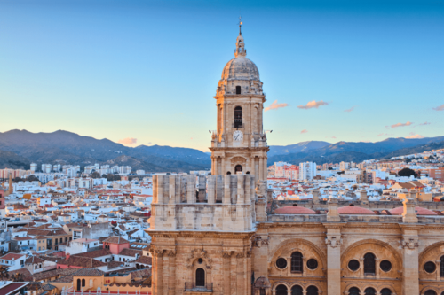
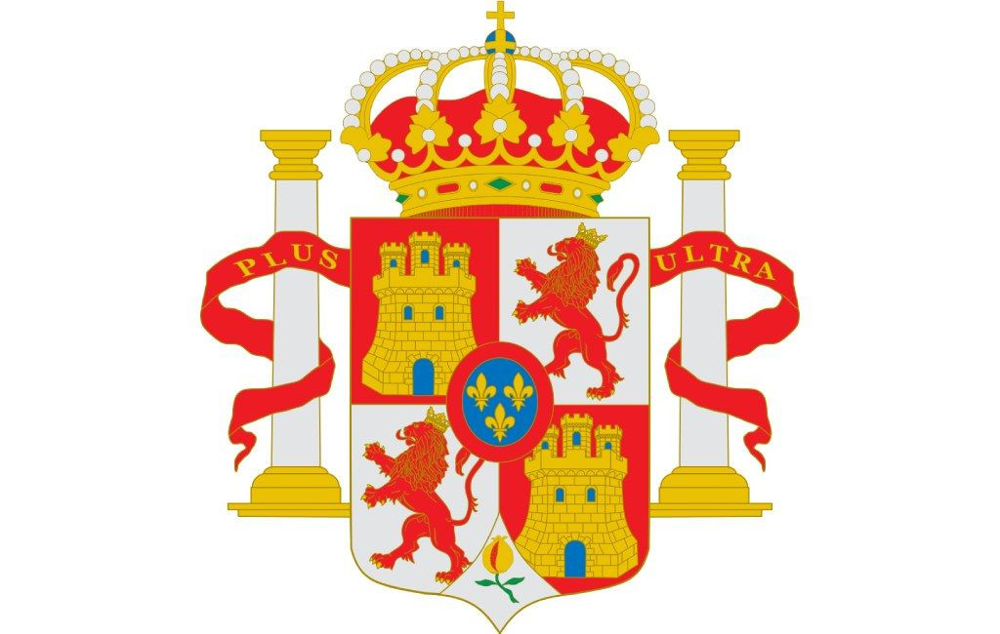
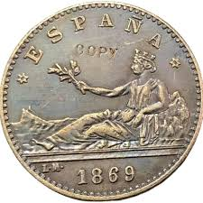
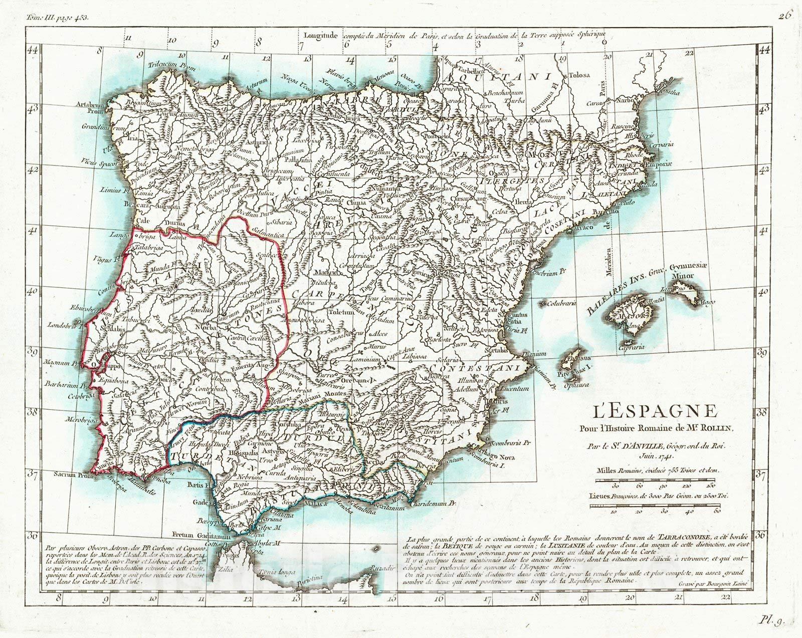

L’Espagne, située au sud-ouest de l’Europe, occupe la majorité de la péninsule Ibérique et possède une grande diversité de paysages. Au nord, les montagnes des Pyrénées forment une frontière naturelle avec la France, tandis que la Meseta centrale domine le cœur du pays avec de vastes plateaux. Le climat varie fortement : océanique au nord, méditerranéen sur les côtes est et sud, plus aride dans le sud-est. L’Espagne comprend aussi plusieurs archipels, comme les Baléares en Méditerranée et les Canaries dans l’Atlantique.
La démographie de l'Espagne
Espagne
Population: 47M
Densité: 94/km²
Croissance: 0.1%
Madrid
Population: 3.3M
Région: Madrid
Densité: 5k/km²
Barcelone
Population: 1.6M
Région: Catalogne
Densité: 16k/km²

Les symbôles de l'Espagne
" PLUS ULTRA "
La devise de l’Espagne, « Plus Ultra », signifie « Toujours plus loin » en latin. Elle a été adoptée au XVIᵉ siècle sous Charles Quint pour symboliser l’esprit d’exploration et la volonté d’étendre l’influence espagnole au-delà du monde connu.

Les armoiries de l’Espagne représentent l’unité et l’histoire du pays. Elles combinent les symboles des anciens royaumes : Castille (château), Léon (lion), Aragon (bandes rouges et jaunes), Navarre (chaîne), et Grenade (pomme de grenade). Les colonnes d’Hercule avec la devise « Plus Ultra » symbolisent l’expansion et les découvertes.
La monnaie espagnole

Avant l’euro, la monnaie officielle de l’Espagne était la peseta, utilisée de 1869 jusqu’en 2002. Elle était divisée en 100 centimos et existait sous forme de pièces et de billets. La peseta a accompagné les grands changements économiques du pays, depuis la monarchie jusqu’à la démocratie.
L’euro est devenu la monnaie officielle de l’Espagne en 2002, remplaçant définitivement la peseta. Il a facilité les échanges économiques avec les autres pays de la zone euro et renforcé l’intégration européenne du pays. Les pièces et billets en euros comportent des symboles communs européens ainsi que des motifs nationaux propres à l’Espagne.
Les langues officielles
Castillan (espagnol) — langue officielle de l’État
Catalan — Catalogne, Baléares, Communauté - valencienne (sous le nom valencien)
Galicien — Galice
Basque (euskera) — Pays basque et Navarre (partie nord)
Aranais (occitan) — Val d’Aran, en Catalogne
L'accès à son territoire
Passeport ou carte d’identité valide
Visa si nécessaire (selon la nationalité)
Justificatif du motif de séjour (tourisme, travail, etc.)
Moyens financiers suffisants
Pas d’interdiction d’entrée (sécurité, santé)
Validité du passeport conforme aux exigences Schengen
Son histoire

711 : Début de la conquête musulmane de la péninsule.
1492 : Fin de la Reconquista + découverte de l’Amérique par Christophe Colomb.
1516 : Début de la monarchie des Habsbourg en Espagne.
1808–1814 : Guerre d’indépendance contre Napoléon.
1936–1939 : Guerre civile espagnole.
1975 : Mort de Franco et transition démocratique.
1978 : Adoption de la Constitution démocratique actuelle.